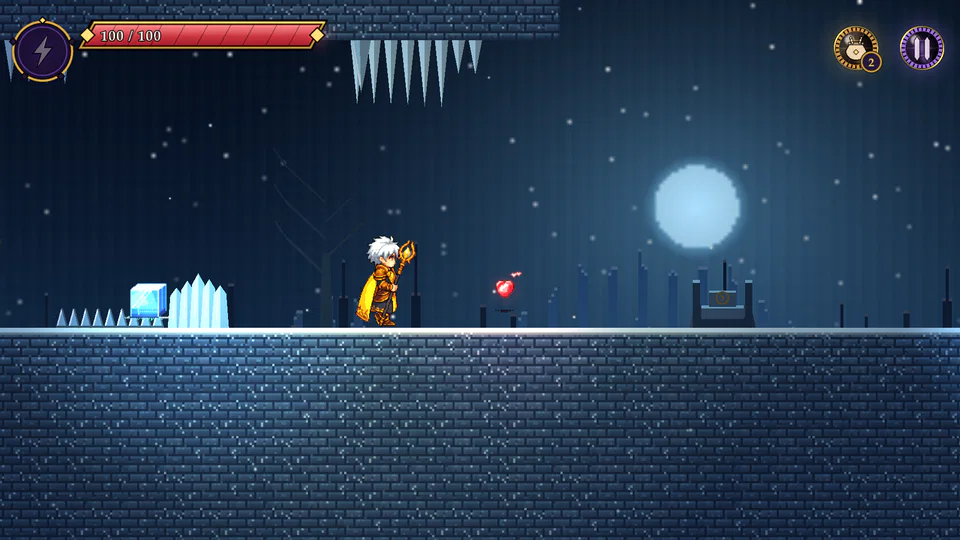
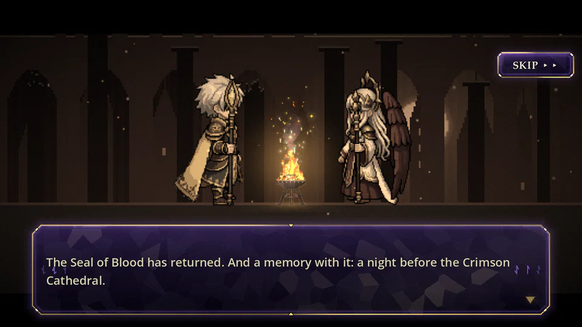
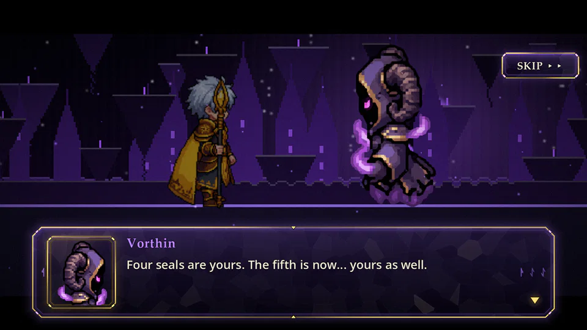
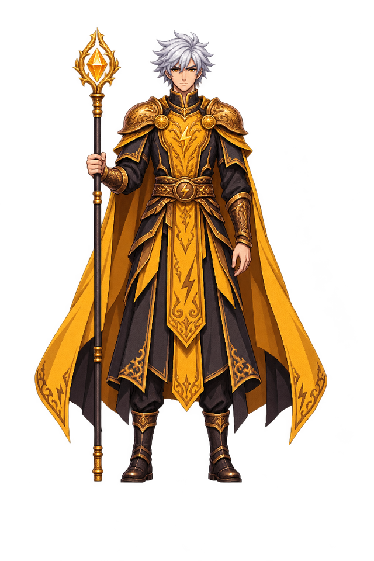
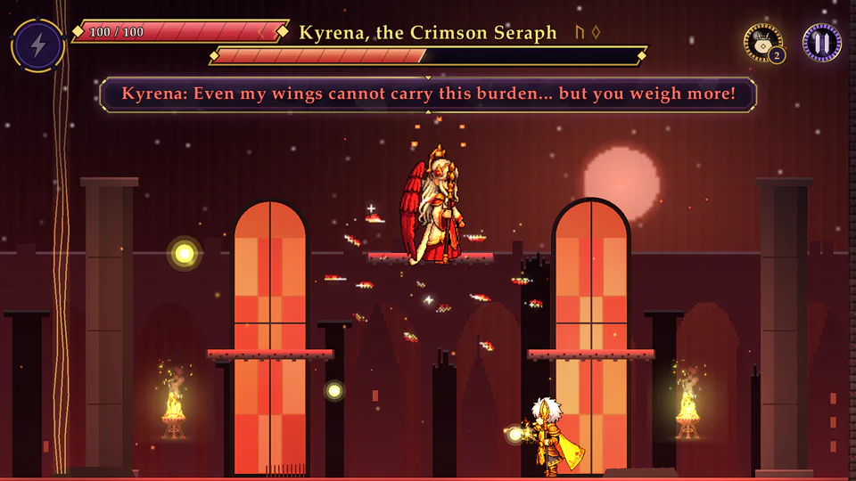
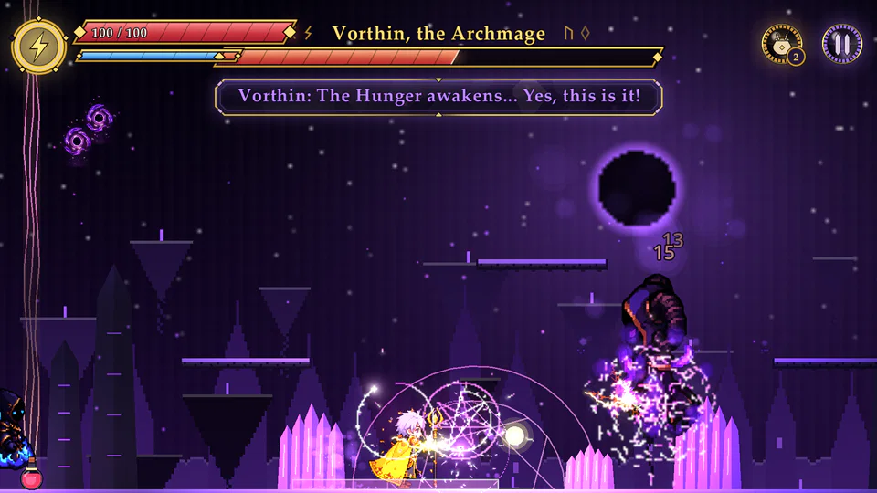
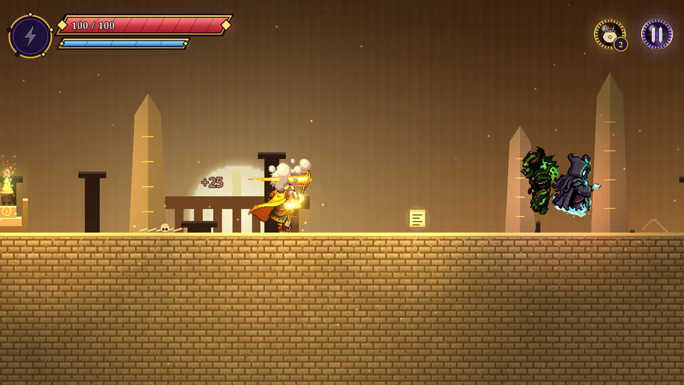
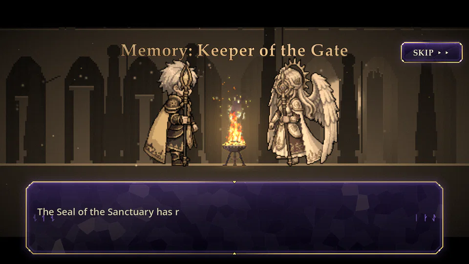
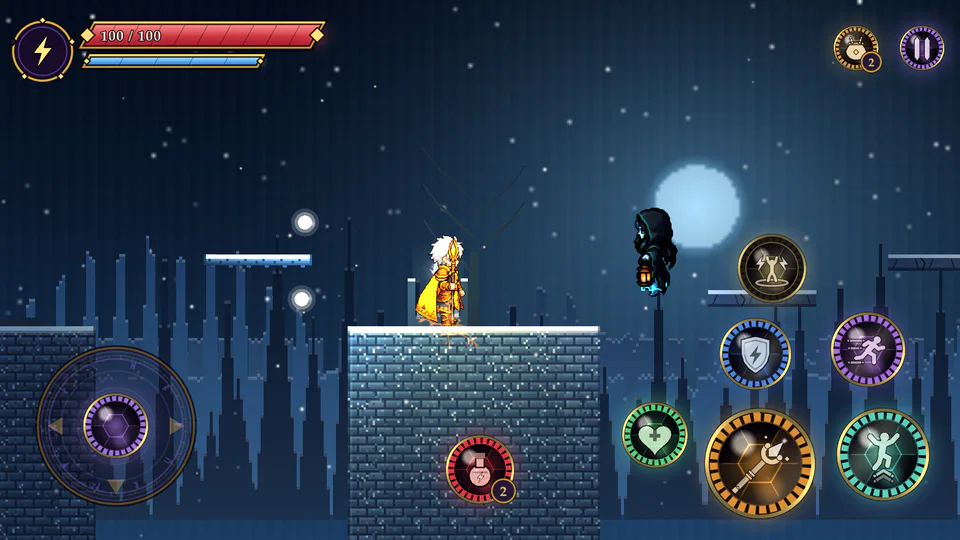
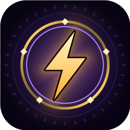

Pixel-perfect platforming
Coyote time, jump buffering, apex hang time, corner correction and dash-jumps. When you fall, it is on you, never on the controls.

From the Ashes of Betrayal
Five mages betrayed him. Nine years later, on the cold stone of a burial chamber, the lightning woke once more.


Each region has its own theme, enemies, traps, secret areas and boss arena. Take back the seal, earn its power, remember the truth.
Kyrena's Crypt

The last warden of the Lightning Academy. No sword; only a staff and the storm that roars within him. Every boss he defeats gives back a seal and a new power.
Spark, spark, piercing charged orb: ranged lightning in a three-beat rhythm.
Surge forward without taking damage, on the ground, in the air or mid-jump.
A second jump in mid-air, granted by the Seal of Blood.
Raise it at the right moment to turn projectiles back.
Turn your mana into a circuit that closes your wounds.
Unite the voices of the seals into one devastating ultimate attack.
Tight platforming, multi-phase boss fights and secrets waiting to be found. All designed from the ground up for touch screens.

Coyote time, jump buffering, apex hang time, corner correction and dash-jumps. When you fall, it is on you, never on the controls.

A three-beat lightning rhythm, downward shots to bounce off foes mid-air, a parry that reflects projectiles, hit-stop and screen shake.
Chasers, bombers, shooters, lobbers, chargers, brutes, teleporting phantoms and shielded knights.

Feather fans, ice lotuses, solar flares, black holes. Every boss has an attack set of its own.

Life Crystals, potions hidden across the map and 15 archive notes that reveal the mages' secrets.
Switch language instantly in game; every line of story, dialogue and interface is translated.

An intro cinematic, confrontations before every boss, sepia memories that return with each seal, and a final choice that leads to two different endings.
Each of them carries a seal. Each believes they had a reason to betray you.
Every image was captured in the engine, from the game itself. Tap a shot to enlarge it.

A floating runic joystick and orbs in a fan layout. Slide from attack to jump, from jump to dash, without ever lifting your finger.
Five seals in your hands. The Hunger in your heart. The fate of the world in a single decision.
Hold the Hunger within and become its master: powerful forever... and alone.
Break the five seals. Vanish together with the Hunger. The world will never be devoured again.

The lightning wakesFive Seals is coming to Android phones and tablets. Five regions, five bosses and two endings await.
Android 7.0 and up · Phones and tablets · Gamepad support · Collects no personal data